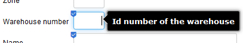
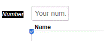

Internationalization (i18n)
Providing customized labels and messages for your application is done using the i18n files (whether you have multilingual requirements or not -- if not, you only have one version of the file in the primary language of your application).
To show or hide warnings in the logs regarding missing labels or messages, set the property "i18nWarnings" in properties/xava.properties to true or false respectively.
Labels
The label source file(s) are found in the i18n folder of your project, named
<app>-labels_<lang>.properties (e.g.
MySchool-labels_en.properties), and are copied by the build script into
web/WEB-INF/classes folder.
Your labels are applied in addition to the label source files provided by OpenXava project (which are found in the
../OpenXava/i18n folder, are named
Labels_<lang>.properties, and are also copied by the build script into your
web/WEB-INF/classes folder). If the same entry appears in your file(s) and the OpenXava file(s), the one in your file will be used, which allows you the ability to customize the labels provided by OpenXava.
Comments can be included using # as the first character.
Blank lines are allowed, and can be useful to visually separate things for easier reading.
Application Name
App name and description can be overridden like this:
MySchool=School ABC
MySchool[description]=Welcome to the School ABC application
In general, many OpenXava items in this file can have
[description] entries -- in the above example, the standard OX welcome page displays the app description. In most other cases, the
[description] text is used for tool-tips that pop up when the mouse is hovered over the field.
Note that if you wish to have a very verbose tooltip, you can embed special characters to help with formatting. Specifically, as of this writing, the newline (\n) and tab (\t) work fine. As an example, this entry
studyId[description]=Unique Identifier per study \n See if this wraps... \n and this...\n\t try a tab....
will produce the expected behavior.
Module Name
Module name labels can be overridden like this:
Classroom.module=Class Room
Field Name
Fields which are used in many places in the application can be overridden globally like this:
addressGroup=Street Address
Specific module field names can be overridden like this:
Classroom.location=Door Badge
For associations, there is often a qualified field, which can be overridden like this:
Project.currentManager.managerName=PM Name
In List mode, qualified names are automatically qualified by OpenXava like this: Manager name of Current manager. If this is not desired, it can be overridden like this:
Project.tab.properties.currentManager.managerName=PM Name
or for a specific named Tab like this:
Project.tabs.my_tab_name.properties.currentManager.managerName=PM Name
or globally for all modules like this:
*.tab.properties.currentManager.managerName=PM Name
@View Section and Group Names
Section and Group names in an
@View can be overridden as well. For example, if I have a section name "s_overview" and a group "g_pgm_dates" defined in a
@View in Entity Program, the labels can be overridden like this:
Program.s_overview=Overview
g_pgm_dates=Program Milestone Dates
Note that as of OpenXava 5.4, Group names do not seem to support any dot-notation.
Actions
Action button names can be overridden using the format <Controller-name>.<action-name> like this:
ListProjectsForProgram.listProjects=List Projects
Messages
The message source file(s) are also found in the
i18n folder of your project, named
<app>-messages_en.properties (e.g.
MySchool-messages_en.properties), and are copied by the build script to the
web/WEB-INF/classes folder.
Your messages are applied in addition to the message source files provided by OpenXava project (which are found in the
../OpenXava/i18n folder, are named
Messages_<lang>.properties, and are also copied by the build script into your
web/WEB-INF/classes folder). If the same entry appears in your file(s) and the OpenXava file(s), the one in your file will be used, which allows you the ability to customize the messages provided by OpenXava.
Tooltips
To define a tooltip add the suffix
[description] in the labels i18n file of your project, for the element (action, property, etc) where you want the tooltip. For example, with next entry in your labels file:
Warehouse.number[description]=Id number of the warehouse
You get:

Since v5.8 if the label and the tooltip matches the tooltip is not shown.
Placeholder (new in v5.8)
To define a placeholder for a field add the suffix
[placeholder] in the labels i18n file of your project. For example, with the next entry in your labels file:
Color.number[placeholder]=Your num.
You get:
